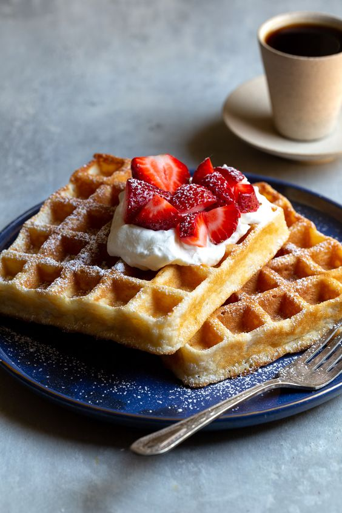

Waffles

Description
Serve these homemade waffles sweet with some berries and whipped cream or savoury with bacon and sausages. These waffles make the perfect weekend brunch or dessert 😍
Ingredients
- 2 cups of flour
- 1 tsp salt
- 4 tsp baking powder
- 2 tbsp white sugar
- 2 eggs
- 1/3 cup butter,melted
- 1 tsp vanilla extract
- 1 cup full cream milk
Steps
- In a large bowl,mix together flour,salt,baking powder
and sugar.
- In a seperate bowl beat the eggs.
- Stir in the milk,butter and vanilla.
- Pour the milk mixture into the flour mixture,beat until blended.
- Put the batter into a preheated waffles iron.
Back to mainpage